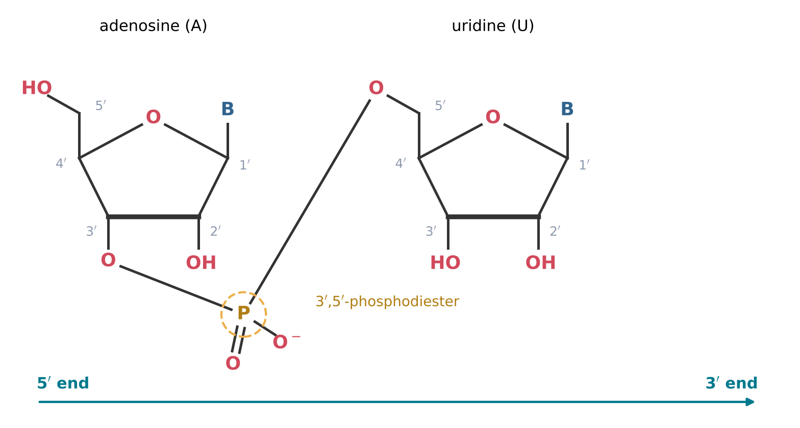
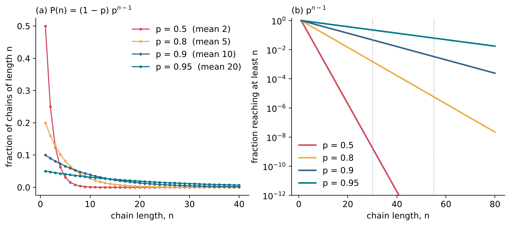

6 Joining Nucleotides into Chains
Learning objectives
After reading this chapter you should be able to:
- Describe the phosphodiester bond and the 5\('\) to 3\('\) direction of an RNA chain, and write sequences in the standard notation.
- Explain why the polymerisation of nucleotides in water requires activated monomers, and describe phosphorimidazolides and cyclic phosphates.
- Describe the competition between chain growth and hydrolysis, and explain why it limits chain length in dilute solution.
- Describe how mineral surfaces, ice and wet-dry cycles favour polymerisation, with reference to key experiments.
- Calculate chain length distributions from a probability of extension, and explain why long chains are rare.
6.1 The phosphodiester bond
Structure of an RNA chain
An RNA molecule is a chain of nucleotides (Section 5.1) joined by phosphodiester bonds. Each phosphate group is esterified twice (Section 4.6): once to the 3\('\)-hydroxy group of one nucleotide and once to the 5\('\)-hydroxy group of the next. The alternating sugar and phosphate units form the backbone of the chain, and the nucleobases are attached to it as side groups at C1\('\) of each ribose (Figure 6.1). Each phosphodiester carries one negative charge at neutral pH (Section 4.6).
Because the two ends of each nucleotide unit differ, the chain has a direction. One end carries a free 5\('\) group (often a phosphate), and the other a free 3\('\)-hydroxy group. By convention, sequences are written from the 5\('\) end to the 3\('\) end, using the one-letter abbreviations of the nucleobases: 5\('\)-AGCU-3\('\) denotes a chain of four nucleotides in which adenosine carries the free 5\('\) end and uridine the free 3\('\) end. A short chain is called an oligonucleotide, often with the number of units given, as in a 10-mer; a long one a polynucleotide.
3\('\),5\('\) and 2\('\),5\('\) linkages
Ribose has hydroxy groups on both C2\('\) and C3\('\), and a phosphodiester can be formed with either. Natural RNA contains only 3\('\),5\('\) linkages. A non-enzymatic polymerisation, in contrast, can form 2\('\),5\('\) linkages as well, and the proportion of each depends on the conditions and on the activating group. Ferris reviewed evidence that montmorillonite-catalysed oligomerisation shows selectivity in the linkages formed, as well as in sequence and in the handedness of the monomers incorporated (Ferris 2006). The regiochemistry of the linkage is therefore another dimension of the selectivity problem (Section 4.7).
The 2\('\)-hydroxy group also makes RNA more labile than DNA, which lacks it. In basic solution, the 2\('\)-oxygen can attack the neighbouring phosphorus atom, breaking the chain by transesterification and leaving a 2\('\),3\('\)-cyclic phosphate at the end of one fragment (Section 5.4) (Li and Breaker 1999). RNA is therefore both formed and broken through the same cyclic intermediate.

6.2 Activated nucleotides
Why activation is needed
The formation of a phosphodiester bond from a nucleoside monophosphate and the hydroxy group of another nucleotide is a condensation, and in water its equilibrium lies on the side of the separated monomers (Section 4.2, Section 5.6). In living cells the energy is supplied by nucleoside triphosphates, whose phosphoanhydride bonds are broken as each nucleotide is added. In prebiotic chemistry, the monomers must be activated: the phosphate must carry a group that is easily displaced, a leaving group, so that the attack of a hydroxy group on phosphorus is favourable.
Phosphorimidazolides
The most widely used activated monomers in laboratory studies are nucleoside 5\('\)-phosphorimidazolides, in which one oxygen of the 5\('\)-phosphate is replaced by a nitrogen atom of imidazole or a substituted imidazole such as 2-methylimidazole. Imidazole is a five-membered aromatic ring containing two nitrogen atoms. Imidazole is a good leaving group, so that the 3\('\)-hydroxy group of a neighbouring nucleotide can attack the phosphorus and displace it, forming a phosphodiester bond.
Activated monomers of this kind made possible the study of template-directed synthesis, the copying of a sequence without enzymes. Inoue and Orgel showed that templates containing mainly cytidine direct the synthesis of oligonucleotides from mixtures of activated mononucleotides (Inoue and Orgel 1983). A nucleotide was incorporated into the products if and only if its complement was present in the template, the reaction had high fidelity, and the products had mean chain lengths of six to ten nucleotides (Inoue and Orgel 1983). This chemistry is the subject of Section 8.2.
Cyclic phosphates
The 2\('\),3\('\)-cyclic phosphates of Section 5.4 are a second type of activated nucleotide. They are formed directly in some prebiotic nucleotide syntheses (Powner, Gerland, and Sutherland 2009), and their ring strain supplies the energy for phosphodiester formation.
The problem with all activated monomers is that the same reactivity that allows them to form phosphodiester bonds also allows water to attack them. Every activated monomer can either join a chain or be hydrolysed back to an inactive nucleoside monophosphate.
6.3 Polymerisation versus hydrolysis
A kinetic competition
Consider an activated monomer M* in solution together with growing chains. In a short time interval, a given M* can react with the end of a chain (rate constant kp, proportional to the concentration of chain ends) or with water (rate constant kh). The probability that it joins a chain rather than being hydrolysed is
\[ p = \frac{k_{\mathrm{p}}\,[\mathrm{ends}]}{k_{\mathrm{p}}\,[\mathrm{ends}] + k_{\mathrm{h}}} \tag{6.1}\]
where [ends] is the concentration of chain ends that can accept a monomer. Water is present at about 55 mol L−1 (Section 4.2), whereas the concentration of chain ends in a dilute prebiotic solution is small. Even if a chain end is much more reactive than a water molecule, hydrolysis can dominate.
The experimental consequence was stated by Monnard, Kanavarioti and Deamer: in simulations of polymerisation, dilute solutions of activated mononucleotides in the millimolar range hydrolyse extensively, and only trace amounts of dimers and trimers are formed (Monnard, Kanavarioti, and Deamer 2003). Similarly, Ferris and co-workers found that reactions in solution produce only short oligomers, the longest typically being a 10-mer (Ferris et al. 1996).
Ways to win the competition
Equation 6.1 shows two ways to increase p: increase the concentration of chain ends and monomers, or decrease the rate of hydrolysis. The settings discussed in the remainder of this chapter do one or both:
- Mineral surfaces adsorb monomers and chains, concentrating them in a thin layer and holding them in favourable orientations (Section 6.4).
- Ice excludes solutes as it freezes, concentrating them in liquid channels between ice crystals, and the low temperature slows hydrolysis (Section 6.5).
- Drying removes water, reducing its activity and concentrating the reactants (Section 6.6).
6.4 Help from surfaces: montmorillonite
Clay minerals are layered silicates formed by the weathering of rocks in water. Montmorillonite is a clay mineral whose layers of aluminium silicate carry a negative charge, balanced by cations held between the layers. Organic molecules, including nucleotides, can enter the spaces between the layers and adsorb on their surfaces. Montmorillonite forms by the alteration of volcanic ash, and clays are expected to have been common on the early Earth wherever rocks were weathered by water.
Most theories of the origin of biological organisation assume that polymers of 30 to 60 monomers are needed to make a genetic system viable, but such polymers had not been formed by condensation in aqueous solution, because hydrolysis competes with polymerisation (Ferris et al. 1996). Ferris and co-workers studied the oligomerisation of activated monomers, both nucleotides and amino acids, in the presence of minerals: montmorillonite for the nucleotides, and illite and hydroxylapatite for the amino acids (Ferris et al. 1996).
In solution, the reactions produced only short oligomers, the longest typically a 10-mer. In the presence of the mineral surfaces, oligomers up to 55 monomers long were formed. The long chains were obtained by successive “feedings” with fresh monomers: the mineral with its adsorbed chains was repeatedly supplied with activated monomer, and polymerisation took place on the surface in a manner akin to the solid-phase synthesis of biopolymers (Ferris et al. 1996).
The experiment showed that chains in the length range thought necessary for a genetic system can be formed without enzymes. It also showed the price: the monomers were activated, and they were supplied repeatedly. The repeated feeding is a laboratory counterpart of a natural setting in which fresh activated monomers arrive continuously, for example from the processes of Chapter 5, while the growing chains remain bound to a mineral.
6.5 Help from ice: eutectic concentration
When a dilute aqueous solution is cooled below its freezing point, pure ice crystallises first. The solutes are excluded from the ice and accumulate in the remaining liquid, whose freezing point falls as its concentration rises. At a sufficiently low temperature, the system consists of ice crystals and a network of concentrated liquid channels between them, the eutectic phase. The concentration of solutes in these channels can exceed that of the original solution by orders of magnitude (Section 3.7).
Monnard, Kanavarioti and Deamer froze dilute solutions of activated mononucleotides together with the metal-ion catalysts Mg(II) and Pb(II), and kept them at −18 °C for periods up to 38 days (Monnard, Kanavarioti, and Deamer 2003). Under these conditions the monomers were concentrated in eutectic phases within the ice matrix. The hydrolysis of the activated monomers was suppressed at the low temperatures, and polymerisation was enhanced, with yields up to 90 percent (Monnard, Kanavarioti, and Deamer 2003).
The products were random RNA analogues with mixed sequences, 5- to 17-mers with traces of longer products, and purine and pyrimidine bases were incorporated at comparable rates and yields (Monnard, Kanavarioti, and Deamer 2003). The authors suggested that ice deposits on the early Earth could have facilitated the synthesis of short and medium-sized random-sequence RNA analogues (Monnard, Kanavarioti, and Deamer 2003).
Ice thus addresses both terms of Equation 6.1: it concentrates the reactants, increasing kp[ends], and lowers the temperature, decreasing kh (Section 2.8). The equal incorporation of purines and pyrimidines is also significant, since a polymerisation that strongly favoured one type of base would produce chains with little diversity of sequence.
6.6 Help from cycles
The wet-dry cycles of Section 5.6 apply to polymerisation as well as to the formation of nucleotides. In the dry phase, the activity of water is low and condensation is favoured; in the wet phase, monomers and chains are redistributed and new material is supplied. Freeze-thaw cycles combine the eutectic concentration of Section 6.5 with periodic mixing, and temperature cycles can separate the strands of double-stranded products, a step needed for copying (Section 8.3). Repeated cycles can accumulate longer chains only if the bonds formed in the favourable phase survive the unfavourable one; in the model of Equation 5.2, this requires the hydrolysis fraction h to be small compared with the conversion fraction f.
Cycles also introduce a form of selection. Chains that are more resistant to hydrolysis, because of their sequence, their folding or their binding to a surface, survive more cycles and so accumulate. This link between chemical stability and persistence is a first step from chemistry towards the selection of sequences discussed in Chapters 7 and 8.
6.7 Chain length distributions
The geometric distribution
Suppose that each time a chain end is offered a monomer, it is extended with probability p and terminated (by hydrolysis of the activated monomer, by blocking of the end, or by any other process) with probability 1 − p, independently of its length. A chain that has reached length n is then extended to n + 1 with probability p. The fraction of chains that reach at least length n is pn−1, and the fraction that have exactly length n is
\[ P(n) = (1-p)\,p^{\,n-1}, \qquad n = 1, 2, 3, \ldots \tag{6.2}\]
This is the geometric distribution. Its mean is
\[ \langle n \rangle = \frac{1}{1-p} \tag{6.3}\]
so that p = 0.5 gives a mean length of 2, p = 0.9 a mean of 10, and p = 0.95 a mean of 20 (Figure 6.2).
Why long chains are rare
Equation 6.2 decreases exponentially with n. With p = 0.9, the fraction of chains that reach a length of at least 30 is 0.929 \(\approx\) 0.047, and the fraction that reach 55 is 0.954 \(\approx\) 0.0034. With p = 0.5, as in a dilute solution where hydrolysis competes on equal terms, the fraction that reach 30 is 0.529 \(\approx\) 1.9 × 10−9. Long chains require p close to 1, and a small change in p near 1 has a large effect on the abundance of long chains. This is why the methods of the preceding sections, which raise p, are decisive, and why repeated feeding, as in the experiment of Ferris et al. (1996), can extend chains far beyond the length reached in a single exposure to monomer.
The simple model omits several effects: the rate of extension may depend on chain length and sequence; chains may be broken by hydrolysis of the backbone as well as terminated; and chains may join end to end. More detailed models treat each reaction as a random event occurring at a rate, and follow the populations of chains of each length by stochastic simulation. The qualitative conclusion is the same: without a mechanism that strongly favours extension, the products are dominated by short chains.

Summary
- In RNA, phosphodiester bonds join the 3\('\)-hydroxy group of one nucleotide to the 5\('\)-hydroxy group of the next; chains have a 5\('\) to 3\('\) direction. Non-enzymatic polymerisation can also form 2\('\),5\('\) linkages, and the 2\('\)-hydroxy group makes RNA susceptible to cleavage.
- Polymerisation in water requires activated monomers, such as nucleoside 5\('\)-phosphorimidazolides or 2\('\),3\('\)-cyclic phosphates. Templates direct the incorporation of complementary nucleotides with high fidelity.
- Activated monomers are also hydrolysed. In dilute millimolar solutions hydrolysis dominates, and only short oligomers form.
- Montmorillonite with repeated feeding of activated monomers gives oligomers up to 55 units long; ice eutectic phases at −18 °C give 5- to 17-mers in yields up to 90 percent; wet-dry and freeze-thaw cycles combine concentration with mixing.
- If each extension succeeds with probability p, chain lengths follow a geometric distribution with mean 1/(1 − p); long chains require p close to 1.
Exercises
- Write the sequence of the chain complementary to 5\('\)-AGGCU-3\('\), using the base pairs A–U and G–C, in the 5\('\) to 3\('\) direction.
- How many phosphodiester bonds does a linear 20-mer contain? How many negative charges does its backbone carry at neutral pH if both ends carry free hydroxy groups?
- Explain why RNA is more easily cleaved in basic solution than DNA.
- In a phosphorimidazolide, which bond is broken when a phosphodiester bond forms? What is the leaving group?
- Using Equation 6.1, calculate p when kp[ends] = kh, and when kp[ends] = 9kh. What mean chain lengths do these values give according to Equation 6.3?
- Explain why freezing a dilute solution can both concentrate the reactants and slow hydrolysis.
- In the experiment of Ferris et al. (1996), why were successive “feedings” with monomers needed to obtain chains of 55 units?
- Using Equation 6.2, calculate the fraction of chains of length at least 10 for p = 0.8 and for p = 0.95.
- Show that the mean of the geometric distribution is 1/(1 − p). (Hint: use \(\sum_{n=1}^{\infty} n x^{n-1} = 1/(1-x)^2\) for \(|x| < 1\).)
- Name two effects omitted from the geometric model, and state for each whether including it would increase or decrease the abundance of long chains.